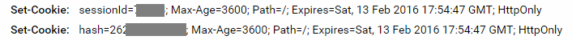
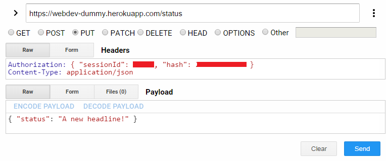

The "dummy" server is a "persistence-less" back-end server for your use while developing your front-end web application. Later you will develop your own back-end server and connect your front-end web app to it.
The server uses simple password authentication and registers a cookie in the browser after a successful login. Cookie management is handled entirely by the server and browser, no front-end logic is required.
There are four access mechanisms to use the dummy server
curlBefore you start implementing your front-end connection, try using curl to connect to the server. In particular, let's change our status headline. We'll start by getting the current status
curl https://webdev-dummy.herokuapp.com/headlines
Ah ha! We need to login first!
curl -H 'Content-Type: application/json' https://webdev-dummy.herokuapp.com/login \
-d '{"username":"netid", "password":"three-word-passphrase"}' -i
(I've added a new line and \ for display purposes, you do not need the \ or the new line.)
This performs a POST (the data flag makes it a post by default) to the /login endpoint. The payload is JSON, we inform the server it's JSON with the content-type header. Be sure to pass properly formed JSON, this means keys are quoted. The -i flag shows us the response headers. If successful, we should see two Set-Cookie statements in the header. We now pass those two authentication cookies when communicating with the server:
curl -H 'Content-Type: application/json' --cookie 'sessionId=12345; hash=222333444' \
https://webdev-dummy.herokuapp.com/headlines
You should get back your current status headline from this GET request. Now we change it:
curl -H 'Content-Type: application/json' --cookie 'sessionId=12345; hash=222333444' \
https://webdev-dummy.herokuapp.com/headline -X PUT -d '{ "headline":"A new headline!" }'
Headline updating is an atomic action. Therefore we use the PUT verb instead of the default POST. Notice that we again pass JSON as the payload (the -d flag). The server should respond with the updated headline message. We can then reverify by the previous GET request.
Using a browser based rest client allows for a lot of ease in debugging processes. I recommend you adopt either the Advanced REST Client or Postman Chrome extension for use when verifying communicataion with the server. In particular, you'll likely run into issues where your payload as produced from your front-end webapp is not correct. Use the browser based REST client to verify what your payload should be and what the response is.
Similar to the command line interaction, you will first need to login to the server. This returns a cookie. Using cookies in a browser based REST client is non-trivial. Instead, I permit the cookie to be passed as an authorization header. Below I use Advanced REST Client. First we login to the server with our netid and three-word-passphrase

Look for the cookies in the response
Send these cookies on all future requests. For example, here's changing the status headline (note that "status" should be replaced by "headline" in the image below)
Here's the swagger UI. In all of the below, if :user is not specified then the currently loggedin user's information is returned.
| endpoint | verb | payload | response | description |
|---|---|---|---|---|
| /sample | GET | none | [ { id: 1, author: Scott, ... }, { ... } ] | Array of sample posts. |
| /login | POST | {username: username, password: password } | { username: :user, result: "success"} | log in to server, sets session id and hash cookies |
| /logout | PUT | none | OK | log out of server, clears session id |
| /register | POST | { username, email, dob, zipcode, password} | { result: 'success', username: username} | Register a new user with the system. This is not functional, new users cannot log in. |
| /articles/:id*? | GET | If specificed, :id is a postId or username | { articles: [ { id: 1, author: Scott, ... }, { ... } ] } | A requested article, all requested articles by a user, or array of articles in the loggedInUser's feed |
| /articles/:id | PUT | :id is a post id { text: message, commentId: optional } |
{ articles: [{ id: 1, author: Scott, ..., comments: [ ... ] }] | Update the article :id with a new text if commentId is not supplied. Forbidden if the user does not own the article. If commentId is supplied, then update the requested comment on the article, if owned. If commentId is -1, then a new comment is posted with the text message. |
| /article | POST | { text: message } image is optional, see below | { articles: [{ id: 1, author: Scott, ..., comments: [] } ]} | Add a new article for the loggedInUser, date and id are determined by server. Optional image upload -- see below. |
| /headlines/:users? | GET | none :users is a comma separated list of user names |
{ headlines: [ {username:Scott, headline:Happy}, { ... } ] } | Get the headlines for multiple users |
| /headline | PUT | { headline: Happy } | { username: Scott, headline: Happy } | Update the headline for the loggedInUser |
| /following/:user? | GET | :user is an optional user id. Defaults to loggedInUser | { username: :user, following: [ userids ]} | get the list of users being followed by the requested user |
| /following/:user | PUT | :user is a user id. | { username: :user, following: [ userids ]} | add :user to the following list for the loggedInUser |
| /following/:user | DELETE | :user is a user id. | { username: :user, following: [ userids ]} | remove :user to the following list for the loggedInUser |
| /email/:user? | GET | :user is a user id | { username: :user, email: emailAddress } | get the email address for the requested user |
| PUT | { email: newEmailAddress } | { username: loggedInUser, email: newEmailAddress } | update the email addres for the loggedInUser | |
| /zipcode/:user? | GET | :user is a user id | { username: :user, zipcode: emailAddress } | get the zipcode for the requested user |
| /zipcode | PUT | { zipcode: newZipCode } | { username: loggedInUser, zipcode: newZipCode } | update the zipcode for the loggedInUser |
| /dob | GET | { dob: date of birth } | { username: loggedInUser, dob: milliseconds } | get the date of birth in milliseconds for the requested user |
| /avatars/:user? | GET | :user is a user id, or comma separated list of user ids | { avatars: [{ username: :user, avatar: pictureURL }, { ... } ]} | get the avatar address(es) for the requested user(s) |
| /avatar | PUT | see below | { username: loggedInUser, avatar: pictureURL } | Update the avatar address for the loggedInUser. See below |
| /password | PUT | { password: newPassword } | { username: loggedInUser, status: 'will not change' } | would update the password for the loggedInUser. But instead just gives message that password will not change. I.e., you can't change your password, sorry. |
To upload a picture we first need to have the user select a file. For example we could have a file input on our page:
<input type="file" accept="image/*"
onChange={(e) => handleImageChange(e)/>
Investigate the event object sent to the onChange method. In particular you should find files within the target of the event. The file is what you are after. What does the file look like? What kind of object is it?
Once you have the file bytestream, you'll want to upload it. In general the server expects json, but for this request we need to use a different content-type because we will be uploading a form. In fact, we want the content-type to be auto generated based on the payload.
For json uploads we set options:
fetch(url, {
headers: {
'Content-Type' : 'application/json'
},
body: JSON.stringify(payload)
})
for non-json uplods:
fetch(url, {
body: payload
})
The payload we send needs to be form data. Form data is, again, key-value pairs. The server expects data in specific keys. For our article posts we send "text" and/or "image" and for avatar uploads we only send "image". Here is how to create and populate a form data object:
const fd = new FormData()
fd.append('text', message)
fd.append('image', file)
"fd" is the payload sent to the fetch call. The keys in the form data are very important: they are what the sever is looking for. So whereas you can change the names "message" and "file" you need the form to have "image" and "text" in order for your article or for your avatar upload to succeed. You'll get an error message from the server otherwise.
With this you should be able to upload your avatar images and post articles with imbedded images